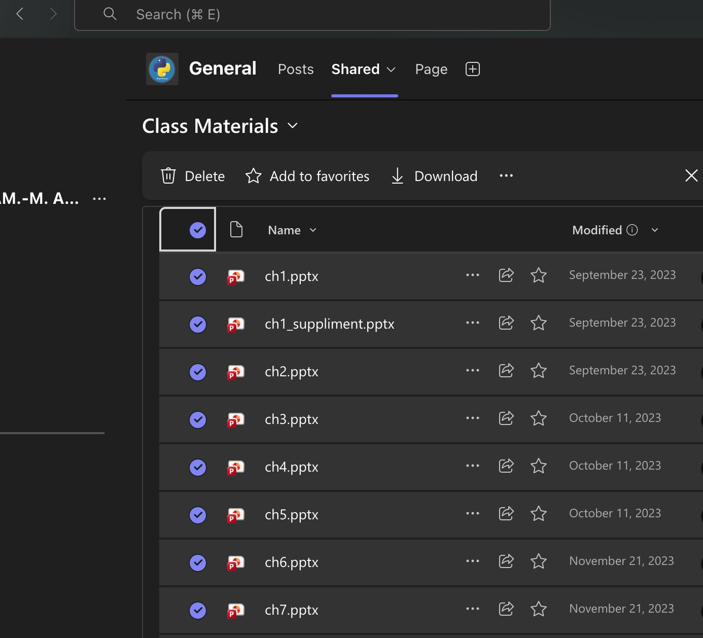

ابدأ من هنا (إجراء عاجل قبل الأربعاء 25/11/2026)
- تحقّق من الفرق المشمولة بالحذف
الحذف التلقائي يوم الأربعاء 25/11/2026 يشمل الفرق الدراسية (Class Teams) التي مضى على إنشائها أكثر من 3 سنوات فقط. الفرق الدراسية الحديثة وفرق الأقسام واللجان غير مشمولة بالحذف الحالي. تفاصيل النطاق
- نزّل ملفاتك احتياطياً قبل الموعد
افتح الفريق الدراسي ← تبويب المشتركة (Shared) أو الملفات (Files) ← حدّد المجلدات والملفات (أو اضغط دائرة التحديد أعلى العمود) ثم اختر تنزيل (Download) بصيغة .zip، أو انسخها إلى OneDrive الشخصي عبر SharePoint. خطوات النسخ الاحتياطي
- صدّر دفاتر OneNote والدرجات بشكل مستقل
ملفات Class Notebook والدرجات (Grades) لا تدخل ضمن التنزيل المضغوط .zip، لذا يجب تصديرها يدوياً قبل الحذف. طريقة التصدير
- تنبيه للخريجين: إزالة مساحة OneDrive بعد سنة
وفق القرار المعتمد، تُزال مساحة OneDrive (0 GB) لحسابات الطلبة الخريجين بعد مرور سنة واحدة على التخرج، وتُحذف بياناتها تلقائياً. جدول الحصص
السياسة ونطاق الحذف
تُطبَّق هذه الضوابط تنفيذاً لقرار مجلس الجامعة رقم 2026/1 الصادر بتاريخ 22/04/2026 بشأن «سياسة ترشيد السعة التخزينية لخدمات مايكروسوفت 365».
ما الفرق التي سيتم حذفها يوم الأربعاء 25/11/2026؟ وهل يتكرر الحذف مستقبلاً؟
يُطبَّق الحذف التلقائي على الفرق الدراسية (Class Teams) التي مضى على إنشائها أكثر من 3 سنوات، أي الفرق المنشأة باستخدام قالب المقررات الدراسية (Education Class Template).
وبعد موجة الحذف الأولى يوم 25/11/2026، سيستمر حذف الفرق الدراسية المتقادمة (أكثر من 3 سنوات) بصورة دورية وفق السياسة المعتمدة. وتؤكد السياسة أن منصة Moodle هي المرجع الأساسي لحفظ محتوى المقررات الدراسية، بينما يُعد Teams أداة مساندة للتعاون والتفاعل خلال الفصل فقط.
هل فرق الأقسام العلمية واللجان والإدارات مشمولة بالحذف؟
لا في الحذف الحالي بتاريخ 25/11/2026. الحذف المعلن الآن يقتصر على الفرق الدراسية (Class Teams) التي مضى عليها أكثر من 3 سنوات.
أما مجموعات العمل غير الأكاديمية واللجان في Teams، فتنص السياسة المعتمدة على حذفها تلقائياً بعد مرور سنة واحدة من عدم النشاط، مع إشعار مالكي الفريق قبل الحذف بمدة 3 أشهر.
كيف أعرف تاريخ إنشاء الفريق الدراسي وما إذا كان أقدم من 3 سنوات؟
- راجع اسم الفريق الدال على الفصل الدراسي (مثل 2022/2023 أو 2023-1 وما قبلها)، أو تاريخ أقدم المنشورات والملفات في القناة العامة (General).
- كما يمكنك فتح تبويب المشتركة (Shared) أو الملفات (Files) والنقر على فتح في SharePoint لمعرفة تواريخ إنشاء المجلدات.
إذا كان لديك أدنى شك في عمر فريق دراسي يحتوي على مواد مهمة، فبادر بأخذ نسخة احتياطية منه فوراً.
هل يمكن استرجاع ملفات الفريق الدراسي بعد حذفه؟
تنبيه مهم: يُعد حذف الفرق الدراسية المتقادمة في 25/11/2026 نهائياً وغير قابل للاسترجاع؛ لذا يجب تنزيل أو نسخ جميع الملفات والمواد العلمية المهمة قبل موعد الحذف.
لماذا تطبق الجامعة سياسة تقنين المساحات التخزينية؟
تتشارك تطبيقات Microsoft Teams وSharePoint وOneDrive في وعاء تخزيني سحابي موحّد للجامعة (M365 Tenant Storage Pool)، وقد وصلت السعة التخزينية إلى مستويات حرجة تقارب الامتلاء الكامل. وبقاء آلاف الفرق الدراسية القديمة والحسابات المنتهية يهدد استمرارية الخدمات الرقمية الأساسية للجميع.
النسخ الاحتياطي وتنزيل ملفات Teams وSharePoint
اختر الطريقة الأنسب لحجم ملفاتك. إذا كانت الملفات ضخمة أو كثيرة، فنسخها سحابياً إلى OneDrive عبر SharePoint أسرع من تنزيلها مضغوطة.
الطريقة أ: التنزيل المضغوط (ZIP)
مناسبة لحفظ نسخة دائمة على جهازك أو قرص خارجي.
- لا تستهلك من حصتك في OneDrive.
- تخضع لحدود التنزيل (10 GB أو 10,000 ملف للمرة الواحدة).
الطريقة ب: النسخ السحابي إلى OneDrive
مناسبة لنقل مواد المقرر إلى حسابك الشخصي في الجامعة دون استهلاك مساحة جهازك أو سرعة الإنترنت.
- سريعة جداً وتُنفّذ بين خوادم مايكروسوفت مباشرة.
- تُحتسب ضمن حصتك التخزينية في OneDrive.
كيف أنزّل جميع ملفات الفريق الدراسي دفعة واحدة بصيغة ZIP؟
- افتح الفريق الدراسي المطلوب في Microsoft Teams، ثم انتقل إلى القناة العامة (General) أو أي قناة تحتوي على ملفات.
- اضغط تبويب المشتركة (Shared) (أو الملفات Files في الإصدارات الأقدم).
- حدّد المجلدات والملفات بالضغط على الدائرة بجانب كل عنصر (أو اضغط دائرة التحديد بجانب عمود Name لتحديد الكل دفعة واحدة).
- اضغط تنزيل (Download) من الشريط العلوي. سيقوم النظام بضغط الملفات وتنزيلها في ملف .zip واحد إلى جهازك.


تذكّر فتح مجلد Class Materials ومجلد Recordings وأي قنوات فرعية أو خاصة داخل الفريق نفسه لتنزيل محتوياتها.
المرجع الرسمي: Microsoft Support — Download files and folders from OneDrive or SharePoint
ما هي حدود التنزيل المضغوط (ZIP) وما الحل للملفات الكبيرة؟
- الحد الأقصى لملف .zip الواحد عند تنزيل عدة ملفات أو مجلدات هو 10 GB و10,000 ملف كحد أقصى في العملية الواحدة.
- الحد الأقصى للملف الفردي عند تنزيله بمفرده هو 250 GB.
الحل إذا فشل التنزيل أو كان المجلد كبيراً: نزّل كل مجلد فرعي على حدة (خصوصاً مجلد تسجيلات المحاضرات Recordings)، أو افتح المكتبة في SharePoint واستخدم ميزة النسخ إلى (Copy to) لنسخ المجلدات إلى OneDrive الشخصي.
كيف أنسخ ملفات الفريق مباشرة إلى OneDrive الشخصي دون تنزيلها على جهازي؟
- من تبويب الملفات (Shared / Files) في الفريق، اضغط قائمة النقاط الثلاث (…) واختر فتح في SharePoint (Open in SharePoint).
- حدّد المجلدات أو الملفات التي تريد حفظها.
- من الشريط العلوي اضغط نسخ إلى (Copy to).
- اختر ملفاتي (My files) لحفظها في OneDrive الشخصي (أو اختر فريقاً آخر حديثاً)، ثم أنشئ مجلداً مثل Course-Archive واضغط نسخ هنا (Copy here).
تأكّد من اكتمال إشعار النسخ ومن وجود الملفات فعلياً داخل OneDrive قبل إغلاق المتصفح.
المرجع الرسمي: Microsoft Support — Move or copy files in SharePoint
ما الفرق بين «المزامنة» (Sync) و«إضافة اختصار إلى OneDrive»؟ ولماذا قد أفقد ملفاتي؟
تحذير بالغ الأهمية: الضغط على Sync أو Add shortcut to OneDrive لا ينسخ ملفاتك احتياطياً! الوضع الافتراضي (Files On-Demand) يُظهر رمز سحابة زرقاء (☁️) وهي مجرد اختصارات على الإنترنت، وعند حذف الفريق الدراسي ستختفي هذه الملفات من جهازك أيضاً.
- إضافة اختصار (Add shortcut to OneDrive): يضع رابطاً فقط داخل OneDrive نحو مكتبة الفريق الأصلية؛ إذا حُذف الفريق اختفى الاختصار ومحتواه.
- المزامنة (Sync): تربط مجلداً على جهازك بمكتبة الفريق في السحابة. وحتى لو اخترت الاحتفاظ دائماً على هذا الجهاز (Always keep on this device)، فإن المجلد يظل مرتبطاً بالمكتبة الأصلية وقد يتأثر بحذفها.
القاعدة الذهبية: بعد تنزيل الملفات أو فتحها محلياً، انسخها إلى مجلد عادي منفصل على جهازك (مثل سطح المكتب أو قرص خارجي) غير مرتبط بمزامنة SharePoint، أو استخدم Copy to إلى مجلد جديد داخل OneDrive الشخصي.
المرجع الرسمي: Microsoft Support — Save disk space with OneDrive Files On-Demand
كيف أحفظ دفاتر ملاحظات الصف (OneNote / Class Notebook) والدرجات والواجبات؟
لا يشمل التنزيل المضغوط (.zip) دفاتر OneNote ولا جداول الدرجات والواجبات، بل يجب حفظها بالطريقة التالية:
1. تصدير دفتر OneNote
- افتح الدفتر في تطبيق OneNote لسطح المكتب (Windows)، ثم اختر ملف (File) ← تصدير (Export) ← دفتر الملاحظات (Notebook) ← حزمة OneNote Package (.onepkg) أو PDF.
- أو انسخ الأقسام (Sections) إلى دفتر ملاحظات جديد محفوظ في حسابك الشخصي على OneDrive عبر النقر بالزر الأيمن على القسم ← نقل أو نسخ (Move or Copy).
2. تصدير الدرجات والواجبات (Grades & Assignments)
- افتح الفريق الدراسي ← تبويب الدرجات (Grades) ← اضغط تصدير إلى Excel (Export to Excel) لحفظ ملف .csv بالدرجات.
- إذا احتجت إلى ملفات تسليم الطلبة للواجبات، افتح مكتبة SharePoint للفريق وتحقّق من مجلد Student Work وقم بتنزيله.
المراجع الرسمية: Export notes from OneNote · Export grades from Teams to Excel
أين تُحفظ تسجيلات المحاضرات (Teams Meeting Recordings) وكيف أحتفظ بها؟
- اجتماعات القنوات (Channel Meetings): تُحفظ تسجيلاتها داخل مجلد Recordings في تبويب ملفات القناة داخل الفريق الدراسي، وبذلك سيتم حذفها مع حذف الفريق. بادر بتنزيلها أو نسخها إلى OneDrive الشخصي.
- الاجتماعات الفردية أو المجدولة من التقويم دون قناة: تُحفظ في مجلد Recordings داخل OneDrive الشخصي لمن ضغط زر بدء التسجيل، ولا تُحذف بحذف الفريق الدراسي (لكنها تستهلك من حصتك الشخصية).
المرجع الرسمي: Microsoft Support — Teams meeting recordings storage
ماذا عن مجلد «مواد الصف» (Class Materials) والمنشورات (Posts)؟
- مجلد Class Materials موجود داخل مكتبة الملفات في الفريق ويمكن تنزيله أو نسخه كباقي المجلدات.
- منشورات القنوات والمحادثات النصية (Posts / Chat) لا تدخل ضمن تنزيلات SharePoint؛ إذا كان هناك نص مهم، انسخه أو اطبع الصفحة بصيغة PDF من المتصفح قبل الحذف.
الحصص التخزينية وفترة الاحتفاظ (قرار مجلس الجامعة 2026/1)
الحدود الرسمية المعتمدة للبريد الإلكتروني (Exchange) والتخزين السحابي (OneDrive) في جامعة الكويت:
1. حصص التخزين السحابي (OneDrive)
| الفئة | السعة التخزينية | فترة الاحتفاظ والسياسة |
|---|---|---|
| أعضاء هيئة التدريس والموظفون | 0.5 TB (500 GB) | نشط؛ مدة الاحتفاظ بالملفات 3 سنوات (حسب آخر تعديل أو وصول). |
| الطلبة | 50 GB | نشط؛ مدة الاحتفاظ 2 سنتان. |
| أعضاء هيئة التدريس المتقاعدون | 100 GB | الاحتفاظ بالملفات لمدة 3 سنوات. |
| الطلبة الخريجون | 0 GB | تُزال خدمة OneDrive وتُحذف البيانات بعد سنة واحدة من التخرج مع إرسال تنبيهات مسبقة. |
| الموظفون المنتهية خدماتهم | 0 GB | مهلة سنة واحدة لتسليم ملفات العمل لرئيس القسم وأخذ النسخ الشخصية قبل المسح. |
| الحسابات الزائرة (Guests) | 50 GB | سنة واحدة. |
2. حصص البريد الإلكتروني (Exchange) والأرشيف
| الفئة | صندوق البريد | الأرشيف السحابي | فترة الاحتفاظ |
|---|---|---|---|
| أعضاء هيئة التدريس | 100 GB | 1.5 TB | 3 سنوات بالبريد / 6 سنوات بالأرشيف |
| الموظفون | 50 GB | 1.5 TB | 3 سنوات بالبريد / 6 سنوات بالأرشيف |
| الطلبة | 10 GB | 100 GB | سنتان بالبريد / 6 سنوات بالأرشيف |
| المتقاعدون | 10 GB | 50 GB | 3 سنوات بالبريد / 6 سنوات بالأرشيف |
| الخريجون والزوار | 5 GB | 50 GB | سنة واحدة بالبريد / سنتان بالأرشيف |
| الموظفون المنتهية خدماتهم | 0 GB | 0 GB | سنة واحدة (مهلة الإخلاء) |
تُحوَّل حسابات البريد الإدارية للأقسام والمراكز إلى صناديق بريد مشتركة (Shared Mailboxes) بسعة 50 GB وفترة احتفاظ سنتين.
هل توجد استثناءات للكليات العملية أو المشاريع البحثية؟ وكيف أطلب استثناء؟
نعم. تجيز السياسة منح مساحات استثنائية لكل من:
- الكليات ذات الطبيعة الخاصة (مثل كلية العمارة وملفات التصميم والرسومات الكبيرة).
- المشاريع البحثية الأكاديمية التي تتطلب سعات تخزين استثنائية.
- وحدات الأرشيف التي تتعامل مع ملفات وسائط متعددة ضخمة.
آلية الطلب: يُقدَّم طلب مبرر خطياً ومعتمداً من رئيس القسم أو المركز العلمي ويُرفع إلى مركز نظم المعلومات (KUCIS) للدراسة والاعتماد (أو عبر avpit@ku.edu.kw).
كيف أعرف المساحة المستخدمة حالياً في OneDrive أو في فريق SharePoint؟
- في OneDrive: افتح OneDrive عبر المتصفح ← أيقونة الترس الإعدادات (Settings) ← إعدادات OneDrive ← مزيد من الإعدادات ← مقاييس التخزين (Storage Metrics).
- في SharePoint / Teams: افتح موقع الفريق في SharePoint ← الإعدادات ← محتويات الموقع ← إعدادات الموقع ← مقاييس التخزين (Storage Metrics).
المرجع الرسمي: Microsoft Support — Manage your OneDrive storage
تنظيم البريد الإلكتروني وتقليل حجم صندوق البريد (Outlook)
صندوق البريد الإلكتروني مخصّص للمراسلات وليس مخزناً للملفات. حفظ المرفقات في OneDrive وتنظيف الرسائل الثقيلة يحافظ على سرعة بريدك واستقراره.
مجلد «الأرشيف» العادي (Archive)
نقل الرسائل إلى مجلد Archive داخل Outlook يبقيها ضمن صندوق البريد الأساسي ولا يوفّر أي مساحة من حصتك، بل يكتفي بتنظيم صندوق الوارد.
الأرشفة المحلية (.pst) أو الأرشيف التلقائي
الأرشفة التلقائية (Online Archive) تنقل الرسائل الأقدم من فترة الاحتفاظ إلى صندوق الأرشيف السحابي المخصص، أو يمكن تصديرها محلياً إلى ملف .pst في Classic Outlook (لا تحفظ ملفات .pst داخل OneDrive).
لماذا يجب عدم استخدام البريد الإلكتروني كمخزن للملفات؟ وما البديل الصحيح؟
- إرسال الملفات كمرفقات يكرّر النسخة في صندوق المرسل وصناديق جميع المستلمين ويستهلك مساحة البريد بسرعة.
- البديل الصحيح: احفظ الملفات والمرفقات المهمة في مجلد منظّم داخل OneDrive أو SharePoint، ثم شارك رابط الملف بدلاً من إرفاقه في البريد، واحذف الرسالة ذات المرفق الضخم بعد التأكد من حفظ الملف. (كما تُحوِّل سياسة الجامعة المرفقات المرسلة إلى أكثر من 5 مستلمين أو قوائم التوزيع تلقائياً إلى روابط OneDrive).
كيف أبحث عن الرسائل ذات المرفقات الكبيرة وأحذفها بسرعة في Outlook؟
- في شريط البحث في Outlook، اكتب أحد أوامر البحث التالية ثم اضغط Enter:
messagesize:>10mbللعثور على الرسائل الأكبر من 10 ميجابايت.messagesize:>5mbللعثور على الرسائل الأكبر من 5 ميجابايت.hasattachments:yesلعرض الرسائل التي تحتوي على مرفقات.
- احفظ المرفقات التي لا تزال بحاجة إليها في OneDrive أو على جهازك.
- احذف الرسائل غير الضرورية، ولا تنسَ فحص مجلد العناصر المرسلة (Sent Items) لأنها كثيراً ما تحتوي على أكبر المرفقات.
المرجع الرسمي: Microsoft Support — How to search in Outlook
كيف أفحص مساحة البريد وأنظف المجلدات في Outlook الجديد والويب؟
- اضغط أيقونة الترس الإعدادات (Settings) في أعلى الشاشة.
- انتقل إلى الحسابات (Accounts) ← التخزين (Storage).
- ستظهر لك المساحة المستخدمة لكل مجلد مع خيارات سريعة لتفريغ الرسائل القديمة أو الكبيرة.
المرجع الرسمي: Microsoft Support — Storage limits in Outlook
كيف أستخدم «تنظيف صندوق البريد» أو إزالة المرفقات فقط في Classic Outlook؟
- تنظيف صندوق البريد: من قائمة ملف (File) ← أدوات (Tools) ← تنظيف صندوق البريد (Mailbox Cleanup) للبحث عن العناصر الكبيرة أو القديمة وحذفها.
- إزالة المرفق مع إبقاء نص الرسالة: افتح الرسالة في نافذة مستقلة ← اضغط السهم بجانب المرفق ← إزالة المرفق (Remove Attachment) ← احفظ التغيير.
- التصدير المحلي (.pst): من ملف (File) ← فتح وتصدير (Open & Export) ← استيراد/تصدير (Import/Export) ← التصدير إلى ملف (.pst)، وذلك وفق صلاحيات الجهاز المعتمدة.
المرجع الرسمي: Microsoft Support — Reduce the size of your mailbox
حذفت رسائل كثيرة ولكن المساحة لم تقل — ما السبب؟
الرسائل المحذوفة تظل تستهلك من حصتك حتى تُفرَّغ نهائياً من موضعين:
- انقر بالزر الأيمن على مجلد العناصر المحذوفة (Deleted Items) واختر إفراغ المجلد (Empty Folder).
- افتح خيار استرداد العناصر المحذوفة من هذا المجلد (Recover items deleted from this folder)، وحدّد العناصر واختر مسح العناصر المحددة نهائياً (Purge Selected Items).
أفضل ممارسات التخزين السحابي اليومية
أين أحفظ ملفات المقررات والأبحاث التي أحتاجها لسنوات قادمة؟
احتفظ بالنسخ المرجعية لمحاضراتك وأبحاثك في OneDrive الشخصي أو في Moodle (المنصة الرسمية لأرشفة المقررات)، وانسخ فقط ما يحتاجه الفصل الحالي إلى الفريق الدراسي الخاص بالفصل. بهذه الطريقة لن تتأثر موادك الأساسية عند حذف الفرق الدراسية المتقادمة بعد 3 سنوات.
هل تستهلك «سلة المحذوفات» وسجل الإصدارات (Version History) من مساحتي؟
- نعم. الملفات المحذوفة في OneDrive أو SharePoint تبقى في سلة المحذوفات (Recycle Bin) وتستمر في استهلاك المساحة حتى تُفرَّغ يدوياً أو تنتهي مدة احتفاظها.
- سجل الإصدارات (Version History): عند تعديل ملفات ضخمة مرات متكررة، يحتفظ SharePoint / OneDrive بنسخ سابقة لكل تعديل، ما يضاعف الحجم الفعلي للملف. يمكنك النقر بالزر الأيمن على الملف ← سجل الإصدارات (Version History) وحذف الإصدارات القديمة غير اللازمة.
المراجع الرسمية: Manage Recycle Bin in OneDrive · SharePoint Version History
كيف أتجنب تكرار الملفات بين Teams وOneDrive والبريد الإلكتروني؟
- اعتمد مصدر حقيقة واحد (Single Source of Truth) لكل ملف بدلاً من حفظ نسخ مكررة في جهازك والبريد وTeams.
- عند إرسال ملف لزملائك أو طلبتك، ارفعه مرة واحدة في OneDrive أو SharePoint وشارك الرابط بصلاحيات مناسبة بدلاً من إرسال المرفق.
- احذف مسودات الفيديو والتسجيلات التجريبية الكبيرة فور انتهاء الحاجة إليها.
الدعم الفني والمراجع الرسمية
للاستفسارات حول سياسة المساحات التخزينية أو طلبات الاستثناء أو المساعدة في النسخ الاحتياطي، يرجى التواصل مع مكتب مساعد نائب مدير الجامعة لتقنية المعلومات عبر البريد الإلكتروني: avpit@ku.edu.kw.